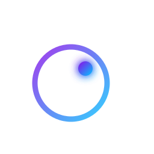

Dominikus-Ringeisen-Werk
Where I work: software development for a social care provider.
Software developer
Software development for a living and for the fun of it, and tuning my car when I am not coding.
Day job
Where I work: software development for a social care provider.
A barrier-free information system for social institutions: a tiled touch interface, read aloud on request, carrying dashboard, news, weather, calendar, documents, maps and media. Built for homes for people with disabilities, senior homes, day-care centres and schools.
One of its main developers at the DRW, which builds it together with SONNTAG IT Solutions, who sell it.
Built in my own time
A cutting-edge Android ROM: simple, smooth and fast.

A Discord bot in Kotlin for the halogenOS team.
Discontinued in 2026. The sources stay online for reference.

My own machines, declared: the stable channel, foundrix, Gnome and COSMIC.

A Home Assistant integration for the MaxStorage home battery. Live photovoltaic, battery and grid readings, MPPT strings discovered as it finds them, and relay states, so surplus energy can drive automations.
Python, installable through HACS. A heavily extended fork of geeks-r-us.

A pointer for the web: a glowing dot and a ring that morphs onto whatever it hovers, yielding to a caret over text. Two files, no build step, no dependencies.
It is what is drawing your pointer on this page.
Away from the keyboard
My car, and the work that goes into it, on @b9_allroad_kru.
The posts are not loaded until you ask for them. Pressing the button fetches them from instagram.com, which means Meta receives your IP address and may set cookies.
Who is typing
Born 1999, living in Germany.
Software development, at work and after it.
Tuning my car and photographing it.
Tools of the trade